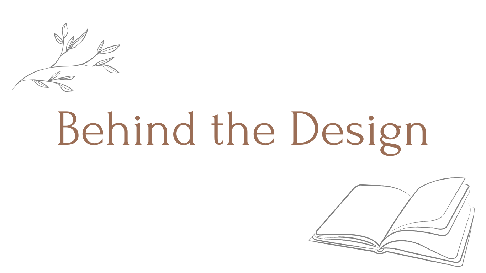

WEBに受容の場所を
Overview
ポートレート作品サイト
- Role
- Design / Planning
- Tools
- Wix
- Concept
- 静寂のある、鑑賞のためのインターフェース
訪れた人と写真の中の人物が新たに出会い、問いかけや共感などの心の対話が生じるような場となるよう設計しました。写真自体の「その人の素の魅力にフォーカスする」という部分が出るよう、
情報や言葉を減らし撮影者の存在感を極力削ることで、写真がメインとなるようなシンプルなデザインを意識しています。

SNSから来た来訪者様
この人の撮る写真をもっとみてみたいな。どんな人なんだろう。

被写体の空気が伝わるページにしたい作者
情報のノイズを削ぎ落とし、視覚的な静寂を。
世界観は大事にしたいがカメラマンの人物像など、余計な情報はあまり入れたくない。
Conclusion
「写真を通じて、自分自身の内面と出会う。」
さらに知りたいという来訪者の熱をシンプルなページで冷まし、
写真ひとつひとつをじっくり見てもらう。
知らない誰かの記憶のように曖昧な写真と対話してみることで
来訪者も自身に対して新たな気づきが生まれる。
双方の確かな「生存」を支える居場所として機能します。
Technical Identity
01
camera
写真撮影を行っています。時にはピントの曖昧な状態で撮影するなど、 自身が残したいと思う、その瞬間の空気を伝える写真が撮れたらいいなと思っています。
02
Wix
Web知識のない学生時代に作成したページのため、 ノーコードでかつ好きなレイアウトで作成できる点に魅力を感じWixで作成を行いました。